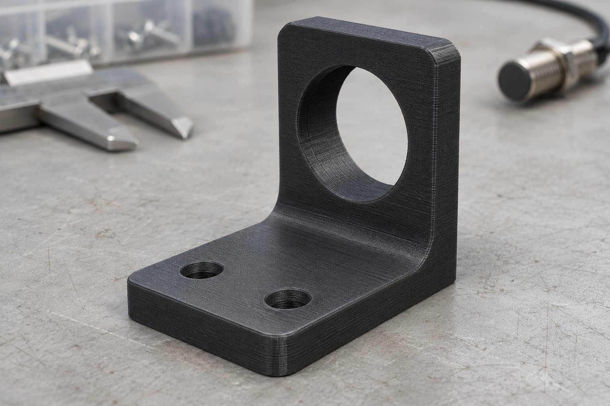
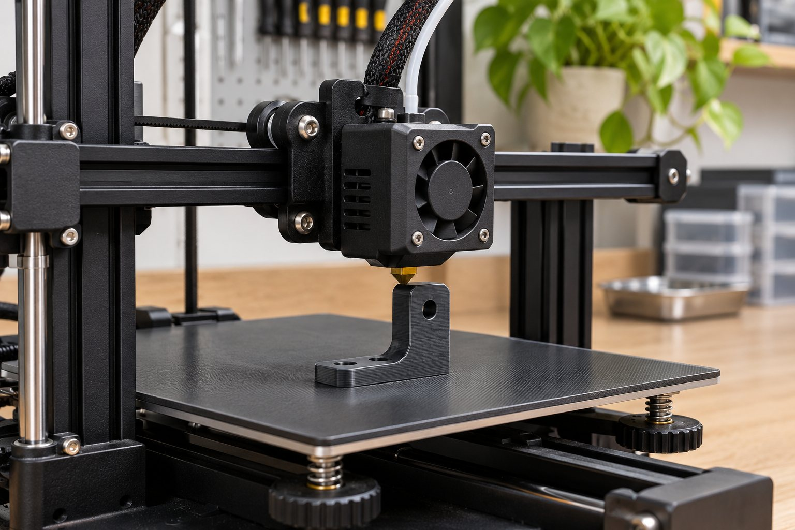
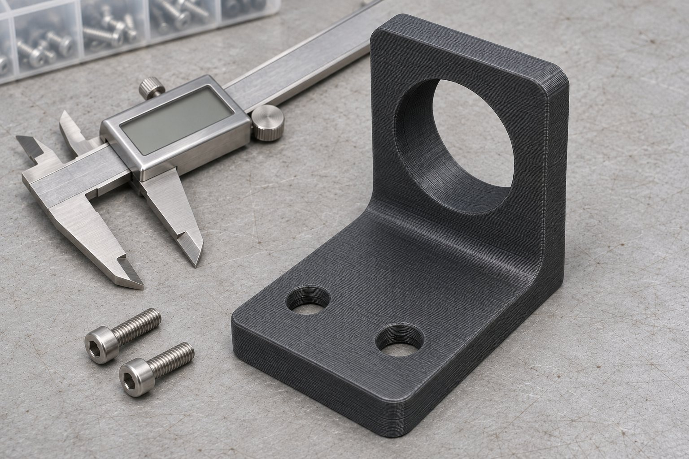

Прототипирование и оснастка / кейс-концепт
От посадочного места к детали
Проверить форму кронштейна на прототипе.

Задача
У условного разработчика есть задача закрепить датчик на испытательном стенде. Типовой держатель не подходит по расположению отверстий. До заказа основной партии нужно проверить форму и посадку на прототипе, а требования к нагрузке и среде зафиксировать отдельно.
Что сделали

Проверяем модель
Получаем файл или размеры, уточняем назначение и ограничения.
Выбираем технологию
Согласуем материал, ориентацию и пробный образец.
Печатаем прототип
Проверяем отверстия и доступ к крепежу на посадочном месте.
Контролируем деталь
Сверяем согласованные размеры и передаём изделие с условиями применения.
Прототип для проверки посадки

Контроль: посадка и согласованные размеры.
Печатная деталь, согласованная модель при включении моделирования в заказ и результаты контроля ключевых размеров. Пригодность к рабочей нагрузке требует отдельной проверки.
Карта проверки / пример
Демонстрационный фрагмент, не рабочая документация.
| Параметр | Способ проверки |
|---|---|
| Посадочные отверстия | Пробная сборка с крепежом |
| Межосевое расстояние | Сверка с согласованной моделью |
| Ориентация слоёв | Учитываем направление нагрузки |
| Условия применения | Среда и температура по заданию |
Этапы и срок
После проверки модели и материала
- Модель и назначение
- Материал и проба
- Печать
- Контроль и передача
Ориентир по стоимости
10 ₽/г
Пример: масса детали 80 г × 10 ₽/г = 800 ₽ за печать. Моделирование, поддержка и постобработка согласуются отдельно. Масса здесь условная.
Итоговый состав, срок и стоимость фиксируем после разбора исходных данных.